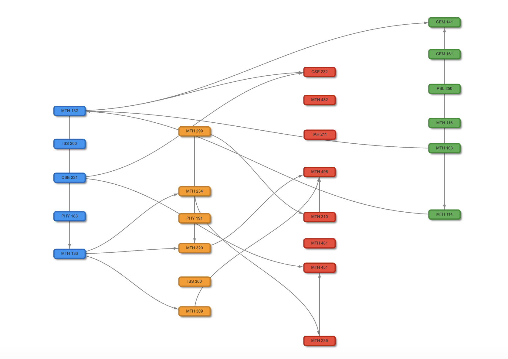

MSU Curriculum Mapping & Dependency Visualization
Built a system to parse, clean, and visualize course prerequisite data at Michigan State University as a directed graph. The tool reveals curriculum structure, bottleneck courses, and student pathways, with a functional API and a web-based UI prototype.
More details
Problem
MSU's raw course prerequisite data is messy and unstructured, making it difficult to understand how courses connect across a degree program. Advisors and researchers lacked a clear way to visualize dependencies or identify critical bottleneck courses affecting student progress.
Approach
Cleaned and standardized raw registrar data, then parsed prerequisite logic using regular expressions to extract structured relationships. Built a directed graph with NetworkX and created both static and interactive visualizations with Plotly. Developed a reusable Python API (demonstrated in `api/API_Demo.ipynb`) and a web-based UI prototype in the `webapi/` folder, so the pipeline can be applied to any MSU major.
Results & Impact
Delivered a working API and interactive curriculum graph covering CNS majors, with a prototype web UI for broader exploration. The tool enables analysis of course dependency chains and DFW rate patterns. Completed as a team capstone project with an MSU academic unit sponsor, with all code and reproducibility steps documented in the repository.